Okayama, Okayama: things to do, food and stays
Okayama · Okayama
Okayama
Highlighted on the Okayama map.
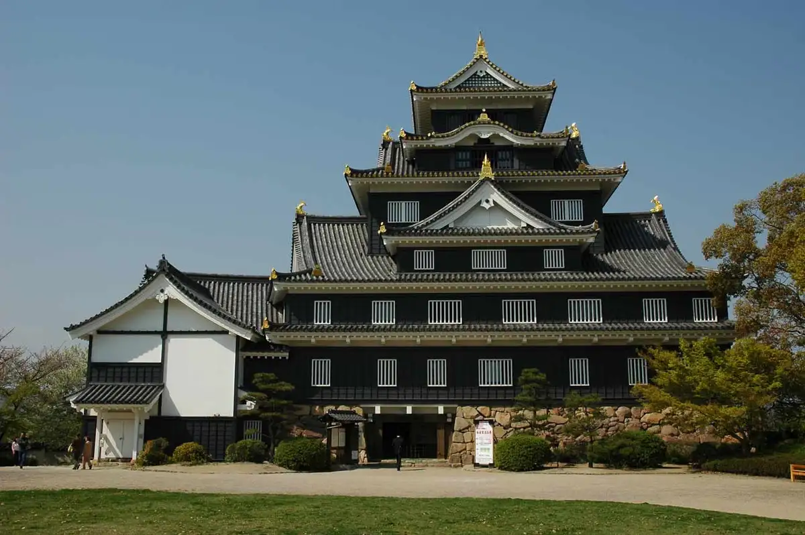
Stay
ホテルグランヴィア岡山
Hotel Guranvia Okayama
JR西日本グループ ヴィアイン岡山
JR Nishinihon Gurupu Viain Okayama
Inn in Kitakuekimoto, Okayama with business travelers.
三井ガーデンホテル岡山
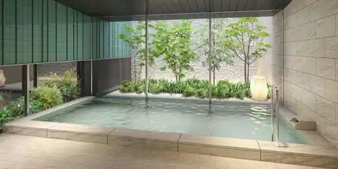
Mitsui Garden Hotel Okayama
Hotel in Kitakuekimoto, Okayama; 2-minute walk from Okayama Station.
ダイワロイネットホテル岡山駅前
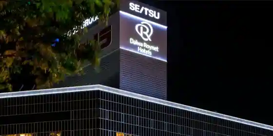
Daiwaroinetto Hotel Okayamaekimae
Hotel in Kitakuekimae, Okayama with buffet meals and breakfast available.
ANAクラウンプラザホテル岡山 by IHG
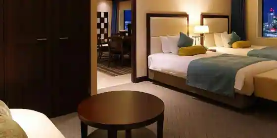
ANA Kuraun Plaza Hotel Okayama by IHG
Hotel in Kitakuekimoto, Okayama with breakfast available; 2-minute walk from Okayama Station.
天然温泉 吉備の湯 ドーミーイン岡山
Tennen Onsen Kibi No Yu Dormy Inn Okayama
Inn in Kitakunishiki, Okayama with breakfast available and a sauna.
アパホテル〈岡山駅前〉
APA Hotel < Okayamaekimae >
Hotel in Kitakushimoishii, Okayama with business travelers.
ザ・ワンファイブ岡山
Za Wanfaibu Okayama
後楽ホテル
Koraku Hotel
Hotel in Kitakuheiwa, Okayama with riverside setting; 5-minute walk from Okayama Station.
ホテルマイステイズ岡山
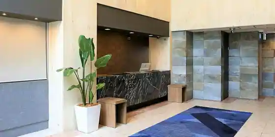
Hotel Maisuteizu Okayama
Hotel in Kitakuhon, Okayama with breakfast available; 5-minute walk from Okayama Station.
セントラルホテル岡山
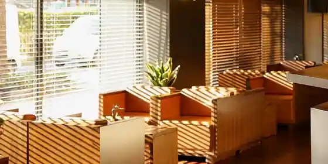
Sentoraru Hotel Okayama
くれたけイン岡山
Kuretake Inn Okayama
Inn in Kitakuyanagi, Okayama with breakfast available and parking.
Dining
400℃ PIZZA
400 PIZZA
はすのみ
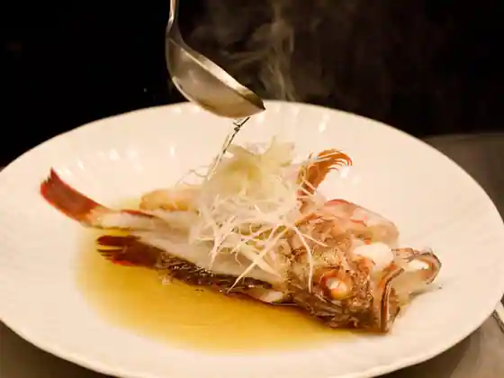
Hasunomi
鮨 縁
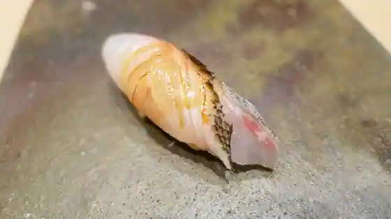
Sushi Heri
喰切料理 八方
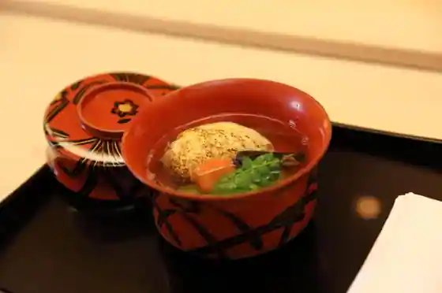
Shoku Setsu Ryori Happo
魚正 山本淳
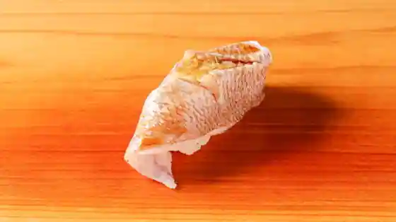
Sakana Sei Yamamoto Atsushi
一鳥目
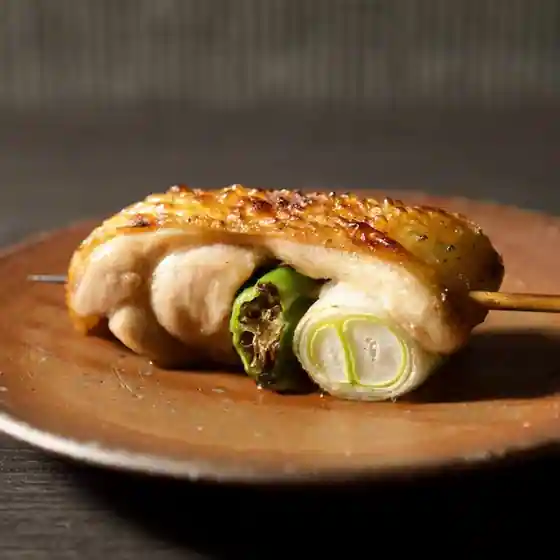
Ichi Chomoku
400℃ mori no machi
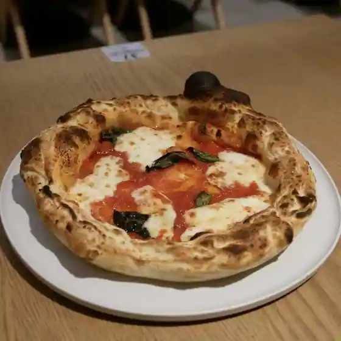
400 mori no machi
ヴィア パーチェ
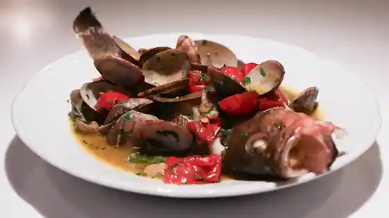
Via Pache
たぬき屋
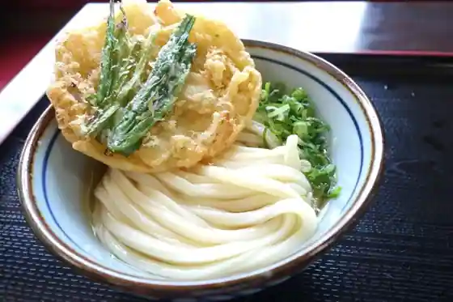
Tanuki Ya
季節料理かたやま
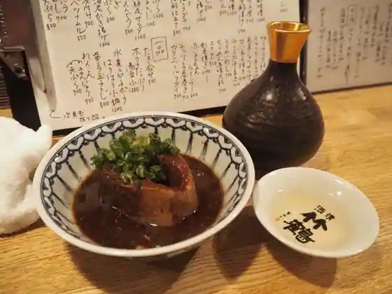
Kisetsu Ryori Katayama
うじょう亭
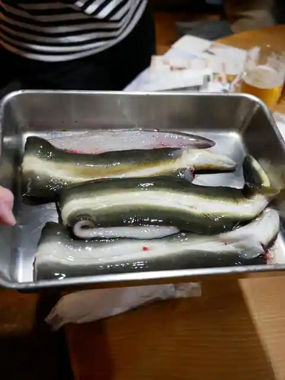
Ujo Tei
Okuto
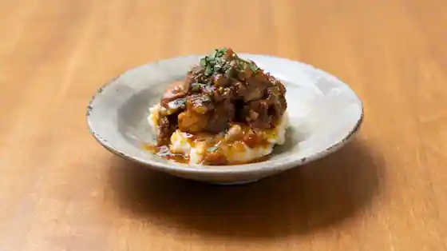
Okuto
Duomo
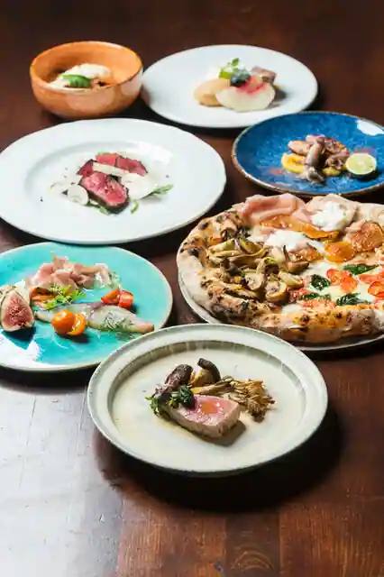
Duomo
スーリィ・ラ・セーヌ
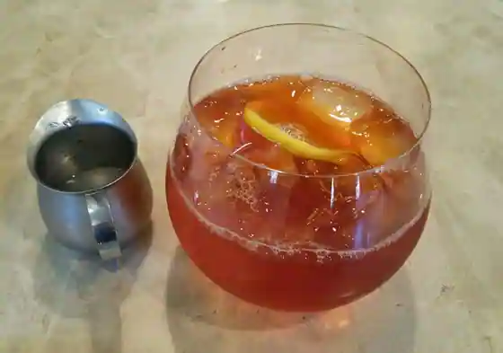
Suri Ra Senu
すし晴
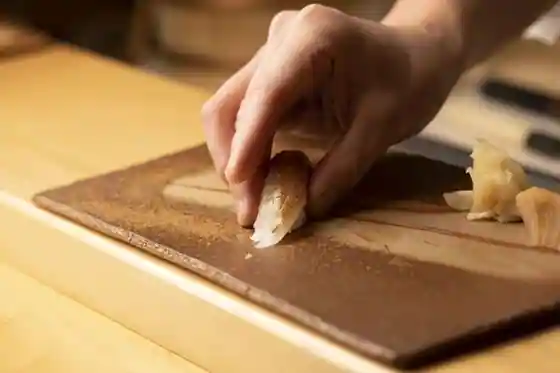
Sushi Sei
essere
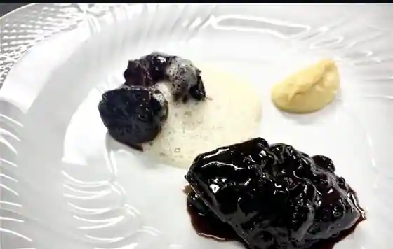
essere
お好み焼き もり
O Konomi Yaki Mori
天神そば
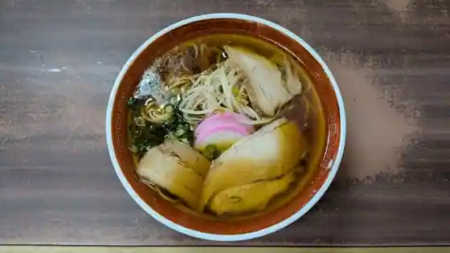
Tenjin Soba
酒囲屋本店
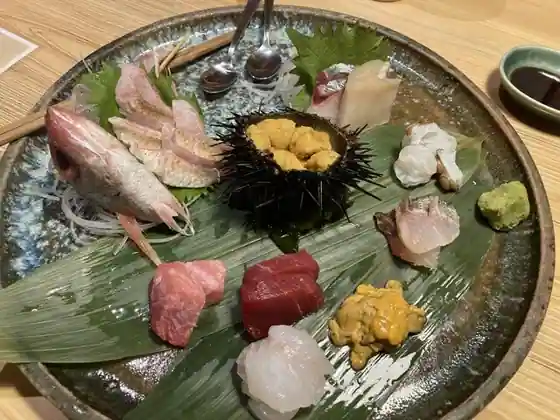
Sake I Ya Hon
はらペコ屋 たま商店
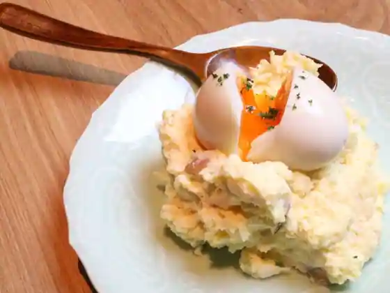
Hara Peko Ya Tama Sho
鉄板キュイジーヌ長尾
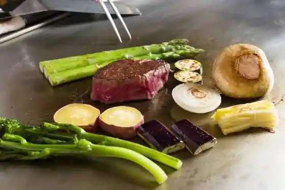
Teppan Kyuijinu Nagao
Cozzýs
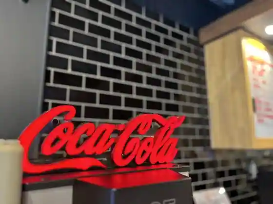
Cozz Y s
錦と吟
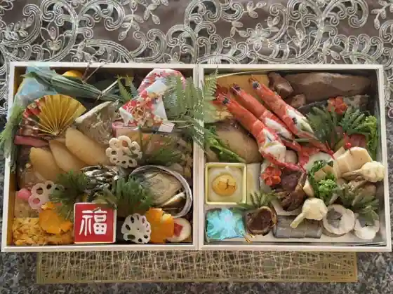
Nishiki To Gin
てんぷら 千の種
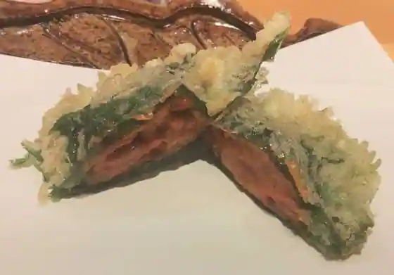
Tenpura Sen No Tane
Sights
Okayama Shiro
Okayama Castle
Korakuen
Korakuen Garden
Kibitsu Shrine
Kibitsu Shrine
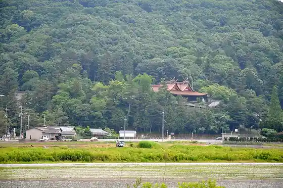
Okayama Prefectural Art Museum
Okayama Prefectural Museum of Art
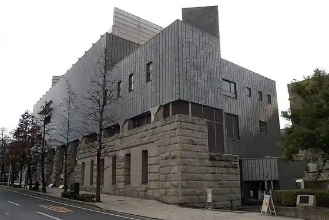
Okayama Yakusho
Okayama City Hall